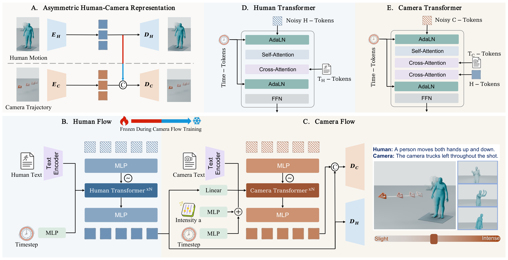

Demo
Method
An independent human generator and a shared, human-conditioned camera generator.

Comparisons
Intensity Control
Vary camera travel with intensity a. Human motion, camera text, and noise are shared.
External Examples
Trained on PulpMotion. Applied to HumanML3D and HY-Motion.
BibTeX
@article{lin2026aesop,
title={AESOP: Asymmetric Human-Camera Generation with Translation-Intensity Control},
author={Lin, Jingzhong and Wang, Zhanke and Li, Heng and Liu, Wenxiang
and Zhang, Zhao and Tang, Kecheng and Xiang, Dongdong and Wang, Changbo
and Kang, Di and Guo, Chunchao and Bao, Linchao and He, Gaoqi},
journal={arXiv preprint arXiv:2609.37229},
year={2026},
url={https://arxiv.org/abs/2609.37229}
}